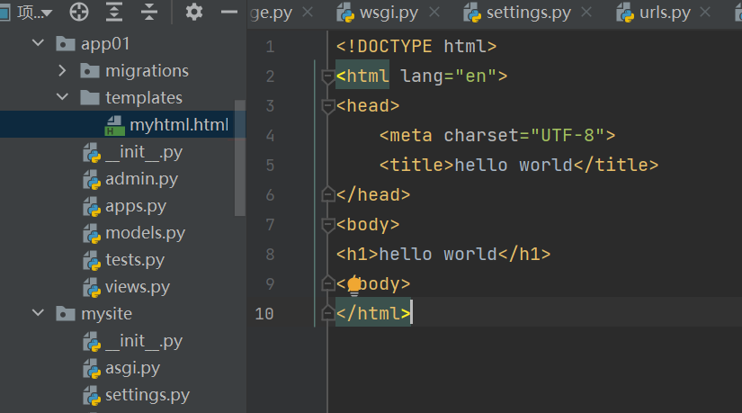
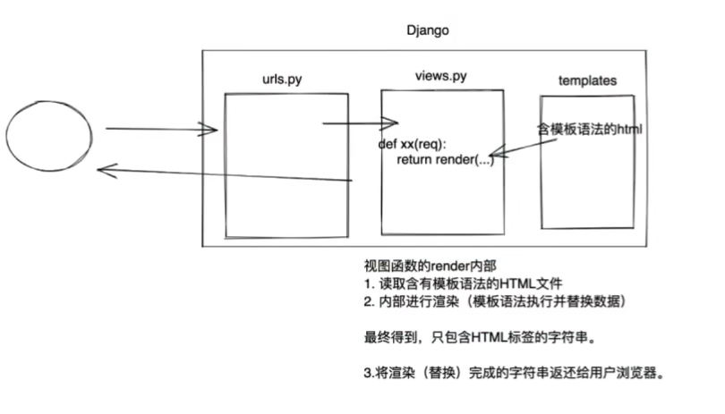
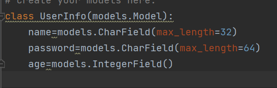

Django
文件
manage.py 项目管理，启动项目，创建app，数据管理
asgi.py wsgi.py 接受网络请求 这些都是默认放着不动
urls.py URL和python函数对应关系放这里 常操作
setting.py 项目配置文件 常操作
APP
大的功能叫一个app
app可以有自己的表结构 函数 html模板 css
创建新app后的 文件
- apps.py 固定的 不要动 app启动类
- migrations.py 同上 数据库变更记录
- tests.py 同上 单元测试
- admin.py django默认提供后台管理
- views.py 重要 url的函数都在这里
- models.py 重要 对数据库操作
上手
- 确保app注册
编写URL和视图函数对应关系 urls.py
编写视图函数 views.py
templates
返回html
静态文件
一般将
- css
- js
- img
放在静态文件 static
这个static文件夹路径可以在setting中更改
模板语法
本质上就是html上写占位符，然后用数据替换占位符
请求和响应
request 是一个对象，封装了用户发送过来的所有请求相关数据
GET 用户请求回应 传递值可以用?进行输入 使用url获取参数
POST通过请求体得到数据 GET是公开的 POST要抓包
数据库操作
- Mysql数据库 pymysql
- Django可以更简单 内部提供ORM框架
ORM
ORM可以帮我们做两件事
创建 修改 删除数据库中的表(不使用SQL语句写) 但不能创建库
操作表中的数据 (不用写sql)
update... |
- 首先自己启动mysql
- 用自带的工具创建数据库
django操作表
- 创建表
- 删除表
- 修改表
创建表
在models.py文件中:
那么在sql中的语句会是这样的 相应的表也会这么建
create table app01_userinfo( |
然后输入 命令行
记住对应的app要注册
python manage.py makemigrations |
每次对数据库进行操作后 必须执行上述语句
对表进行增加列后 django会出现两个选项
1.自己输入值作为该列的初始值
2.退出 在py文件中进行设置
操作表中的数据
- 新建表
UserInfo.objects.create(name="weebk",password="123",age=18) |
本博客所有文章除特别声明外，均采用 CC BY-NC-SA 4.0 许可协议。转载请注明来自 Weeb-killer的博客！